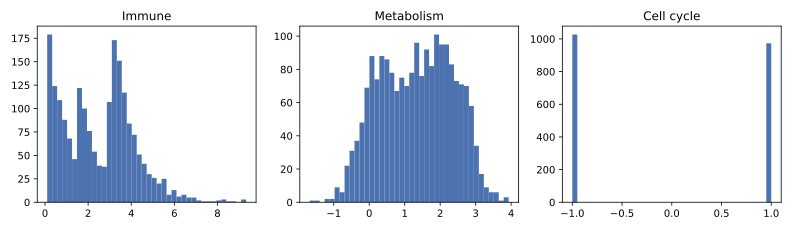
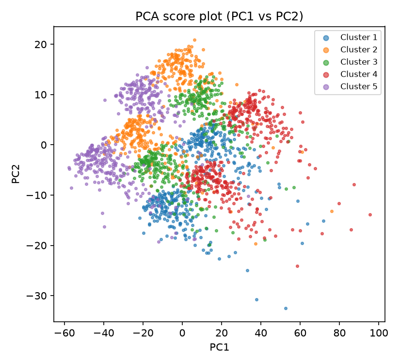
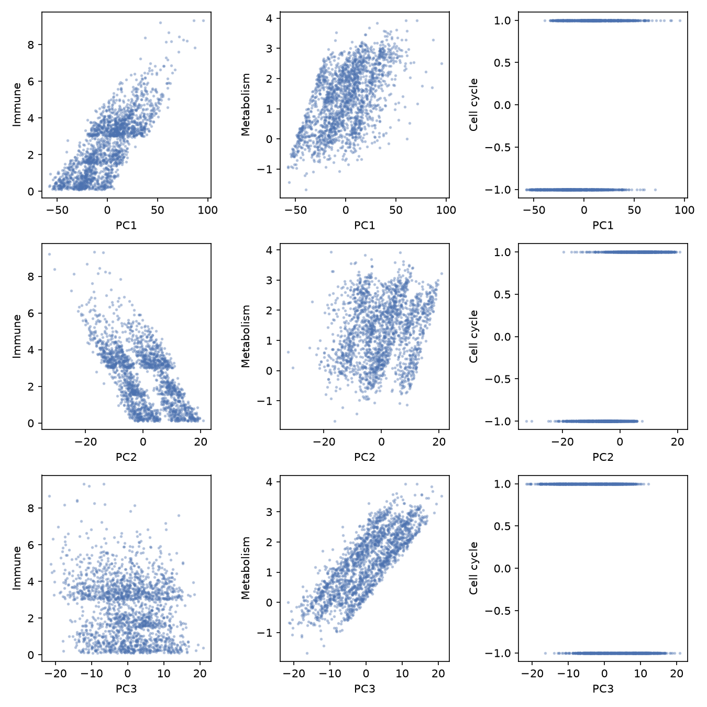
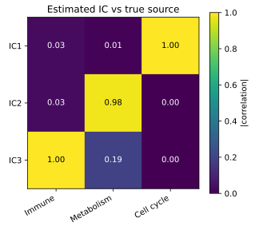
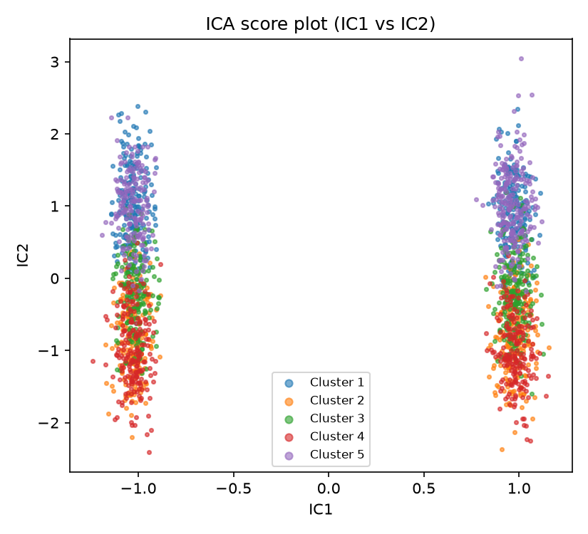
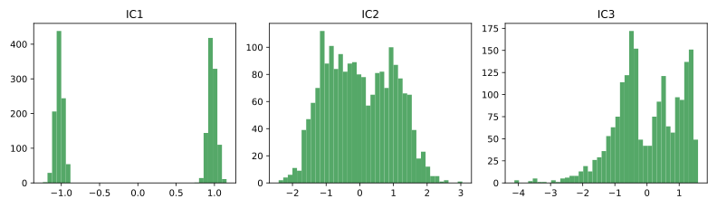

2 ICA with Python
Here we repeat that workflow in Python with scikit-learn. The simulation contains three latent signals, immune activation, metabolism, and cell cycle activity, that are mixed across genes. For the derivation of FastICA and the implementation from scratch, refer to the mathematics section in the previous chapter.
2.1 Setup
We use sklearn.decomposition.FastICA and sklearn.decomposition.PCA. Preprocessing is done with sklearn.preprocessing.StandardScaler, and plots are made with matplotlib.
numpy 2.5.3, pandas 3.0.6, scikit-learn 1.9.1, matplotlib 3.11.2. The whiten argument of FastICA changed its default in scikit-learn 1.3, so the exact argument names used below assume a reasonably recent scikit-learn version. Check sklearn.__version__ if anything below behaves differently.
2.2 Simulate expression data
The design matches the R example: 2,000 cells, 1,000 genes, and three latent sources. Immune activity has an exponential contribution, metabolism is normally distributed within each cluster, and cell cycle takes one of two values. A positive loading matrix mixes the sources across genes, after which Gaussian noise is added. The seed is fixed, but R and Python use different random-number generators, so the values are not expected to match across chapters.
Throughout this chapter, rows are cells and columns are genes.
import numpy as np
from sklearn.decomposition import PCA, FastICA
from sklearn.preprocessing import StandardScaler
rng = np.random.default_rng(123)
n_genes, n_cells, n_sources, n_clusters = 1000, 2000, 3, 5
cells_per_cluster = n_cells // n_clusters
cluster_means = np.array([
[3.0, 0.5], # Cluster 1: High immune, low metabolism
[0.1, 2.0], # Cluster 2: Low immune, high metabolism
[1.5, 1.5], # Cluster 3: Moderate all
[3.0, 2.5], # Cluster 4: High in all
[0.1, 0.1], # Cluster 5: Low in all
])
latent_blocks, cluster_labels = [], []
for i in range(n_clusters):
immune = rng.exponential(1.0, cells_per_cluster) + cluster_means[i, 0]
metabolism = rng.normal(cluster_means[i, 1], 0.5, cells_per_cluster)
cell_cycle = rng.binomial(1, 0.5, cells_per_cluster) * 2 - 1
latent_blocks.append(np.column_stack([immune, metabolism, cell_cycle]))
cluster_labels += [f"Cluster {i + 1}"] * cells_per_cluster
latent_sources = np.vstack(latent_blocks)
cluster_labels = np.array(cluster_labels)
gene_loadings = np.abs(rng.standard_normal((n_genes, n_sources)))
expression_matrix = latent_sources @ gene_loadings.T
expression_matrix += rng.normal(scale=1.0, size=(n_cells, n_genes))
print("latent_sources:", latent_sources.shape)
print("expression_matrix:", expression_matrix.shape)latent_sources: (2000, 3)
expression_matrix: (2000, 1000)
2.3 Use PCA as a reference
As a reference, we run PCA after centering and scaling each gene. StandardScaler uses the population standard deviation (ddof=0), whereas R’s scale() uses the sample standard deviation (ddof=1). In this example that difference multiplies every standardized gene by the same constant, so it does not change the PCA directions.
scaled_data = StandardScaler().fit_transform(expression_matrix)
pca = PCA(n_components=3)
pca_scores = pca.fit_transform(scaled_data)
print(pca_scores.shape)(2000, 3)

PCA captures much of the simulated structure, but the panels show that a PC can be related to several sources. PCA orders directions by variance; it does not try to recover one independent process per component.
2.4 Fit FastICA
ica = FastICA(n_components=3, random_state=123, whiten="unit-variance")
S = ica.fit_transform(scaled_data)
print("S:", S.shape)
print("components_:", ica.components_.shape)
print("mixing_:", ica.mixing_.shape)
print("mean_:", ica.mean_.shape)
print("n_iter_:", ica.n_iter_)S: (2000, 3)
components_: (3, 1000)
mixing_: (1000, 3)
mean_: (1000,)
n_iter_: 5fit_transform(X) returns the estimated component scores S, with one row per cell and one column per component. This has the same layout as R’s ica_result$S.
components_, shape(n_components, n_features): the unmixing operator. Applied to the centered data, it producesS. This plays the role of R’sWcombined with the whitening step, not R’sA.mixing_, shape(n_features, n_components): the pseudo-inverse ofcomponents_, i.e. the matrix that maps sources back onto genes. This is the Python equivalent of R’s mixing matrixA, but transposed. R’sAisn.comprows bypgenes, so a component’s gene signature is a row ofA. scikit-learn’smixing_ispgenes byn_components, so a component’s gene signature is a column ofmixing_.mean_, shape(n_features,): the per-gene mean subtracted before whitening. Only set whenwhitenis notFalse.
In scikit-learn, components are columns of mixing_; in R’s fastICA, they are rows of A. Thus, mixing_[i, :] does not correspond to A[i, ].
2.5 Match components to the simulated sources
ICA components have no intrinsic order. To compare them with the known simulated signals, we calculate every component–source correlation and match on absolute correlation. Absolute values are used because an ICA component and all of its loadings may be multiplied by -1 without changing the fitted model.
import pandas as pd
corr = np.corrcoef(np.hstack([S, latent_sources]).T)[:3, 3:]
corr_df = pd.DataFrame(corr, index=["IC1", "IC2", "IC3"],
columns=["Immune", "Metabolism", "Cell cycle"])
print(corr_df.round(3))
best_match = np.abs(corr).argmax(axis=1)
names = ["Immune", "Metabolism", "Cell cycle"]
for i in range(3):
j = best_match[i]
print(f"IC{i+1} -> {names[j]} (r = {corr[i, j]:.3f})") Immune Metabolism Cell cycle
IC1 -0.028 -0.009 -0.999
IC2 0.028 -0.980 -0.004
IC3 -0.999 -0.193 -0.004
IC1 -> Cell cycle (r = -0.999)
IC2 -> Metabolism (r = -0.980)
IC3 -> Immune (r = -0.999)
In this fit, IC1 matches cell cycle, IC2 matches metabolism, and IC3 matches immune activity. A different initialization may return the same signals in different columns or with reversed signs, so later analyses should match components by their values rather than by column number.
All three correlations are negative in this fit. The magnitude of IC3’s correlation with immune activity (|r| = 0.999) indicates the quality of the match. Reversing both the IC3 scores and its column of mixing_ gives an equivalent representation of the fitted model.
2.6 Plot the component scores
import matplotlib.pyplot as plt
fig, ax = plt.subplots(figsize=(5.5, 5))
for k, label in enumerate(sorted(set(cluster_labels)), start=1):
mask = cluster_labels == label
ax.scatter(S[mask, 0], S[mask, 1], s=6, label=label, alpha=0.6)
ax.set_xlabel("IC1"); ax.set_ylabel("IC2"); ax.legend(markerscale=2, fontsize=8)

2.7 Identify genes with large mixing weights
A component’s gene signature is a column of mixing_. For IC3, the component matched to immune activity above:
loadings = ica.mixing_[:, 2]
top_genes = np.argsort(-np.abs(loadings))[:10]
for g in top_genes:
print(f"gene_{g + 1}: {loadings[g]:.3f}")gene_801: -0.973
gene_443: -0.972
gene_497: -0.969
gene_745: -0.969
gene_16: -0.968
gene_85: -0.965
gene_535: -0.963
gene_462: -0.960
gene_407: -0.957
gene_800: -0.956The largest absolute weights are negative because this fit represents immune activity with a reversed component sign. The signs are meaningful only relative to other genes in the same component; reversing all scores and weights would describe the same fit.
2.8 Useful FastICA arguments
Python (FastICA) |
R (fastICA) |
Notes |
|---|---|---|
n_components |
n.comp |
Number of independent components to estimate. |
algorithm (“parallel”, “deflation”) |
alg.typ (“parallel”, “deflation”) |
Whether components are extracted jointly (“parallel”) or one at a time (“deflation”). |
fun (“logcosh”, “exp”, “cube”) |
fun (“logcosh”, “exp”) |
The contrast function approximating negentropy. scikit-learn additionally offers "cube", which R does not have. |
fun_args (e.g. {"alpha": 1.0}) |
alpha |
For fun="logcosh", R’s single alpha corresponds to fun_args={"alpha": ...} in Python. |
max_iter |
maxit |
Maximum fixed-point iterations. Both default to 200. |
tol |
tol |
Convergence tolerance. Both default to 1e-4. |
random_state |
(set via set.seed() before the call) |
Controls the random initial unmixing matrix. |
whiten (“unit-variance”, “arbitrary-variance”, False) |
(whitening is always performed, via K) |
scikit-learn can skip whitening if the data is already whitened. R’s fastICA always whitens internally. |
whiten default changed in scikit-learn 1.3
Before scikit-learn 1.3, whiten defaulted to True and used what is now called "arbitrary-variance" scaling. From 1.3 onward the default is "unit-variance", which rescales each recovered source to unit variance. Check sklearn.__version__ before relying on this default in other environments.
2.9 Whitening
FastICA whitens the data internally before its fixed-point iterations. The whitening derivation in the previous chapter explains this step and shows its manual implementation.
The next chapter applies ICA in both R and Python to a real gene expression dataset.